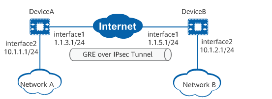

Example for Configuring GRE over IPsec for Enterprise Interconnection
Applicable Products and Versions
This example applies to AR routers running V600R022C10 and later versions.
Overview
This document provides a typical configuration example for GRE over IPsec. It presents a detailed plan of network deployment, traffic scheduling, and Internet access security policy configuration on branch and HQ routers, provides a configuration example based on the plan, and offers references for networking planning and device configuration.
Networking Requirements
DeviceA and DeviceB function as the egress routers of the enterprise branch and HQ, respectively. They want to establish a GRE over IPsec tunnel between each other for communication.

Configuration Roadmap
- Enable the DNS relay function globally and specify the DNS server address.
- Deploy a DHCP server on the LAN to assign addresses to intranet PCs and laptops. Deliver the DNS server address to the terminals together with the addresses assigned through DHCP.
- Perform basic interface configurations.
- Configure static routes to ensure that there are reachable routes between DeviceA and DeviceB.
- Configure a GRE tunnel interface and a forwarding route for the tunnel interface to direct the data flows to be protected by IPsec to the interface.
- Configure an IPsec profile.
Data Planning
Device |
Interface |
IP Address |
|---|---|---|
DeviceA |
interface1 |
1.1.3.1 |
interface2 |
10.1.1.1 |
|
GRE tunnel |
Source IP address: 1.1.3.1 Destination IP address: 1.1.5.1 |
|
IPsec policy |
Authentication mode: PSK authentication PSK: YsHsjx_202206 Local ID type: IP address Peer ID type: IP address |
|
DeviceB |
interface1 |
1.1.5.1 |
interface2 |
10.1.2.1 |
|
GRE tunnel |
Source IP address: 1.1.5.1 Destination IP address: 1.1.3.1 |
|
IPsec policy |
Authentication mode: PSK authentication PSK: YsHsjx_202206 Local ID type: IP address Peer ID type: IP address |
Precautions
None
Procedure
- Enable the DNS relay function globally and specify the DNS server address.
<HUAWEI> system-view [HUAWEI] sysname Router [Router] dns relay enable [Router] dns resolve [Router] dns server 10.10.1.2
- Deploy a DHCP server on the LAN to assign addresses to intranet PCs and laptops. Deliver the DNS server address to the terminals together with the addresses assigned through DHCP.
[Router] dhcp enable [Router] ip pool ip-pool1 [Router-ip-pool-pool1] gateway-list 10.10.1.1 [Router-ip-pool-pool1] network 10.10.1.0 mask 255.255.255.128 [Router-ip-pool-pool1] excluded-ip-address 10.10.1.2 [Router-ip-pool-pool1] dns-list 10.10.1.2 [Router-ip-pool-pool1] lease day 30 hour 0 minute 0 [Router-ip-pool-pool1] domain-name huawei.com [Router-ip-pool-pool1] quit
- Perform basic interface configurations on DeviceA.
<HUAWEI> system-view [HUAWEI] sysname DeviceA [DeviceA] interface 10ge 0/0/2 [DeviceA-10GE0/0/2] ip address 10.1.1.1 24 [DeviceA-10GE0/0/2] quit [DeviceA] interface 10ge 0/0/1 [DeviceA-10GE0/0/1] ip address 1.1.3.1 24 [DeviceA-10GE0/0/1] quit
- Configure a GRE tunnel interface on DeviceA.
[DeviceA] interface tunnel 1 [DeviceA-Tunnel1] tunnel-protocol gre [DeviceA-Tunnel1] ip address 2.1.1.1 24 [DeviceA-Tunnel1] source 1.1.3.1 [DeviceA-Tunnel1] destination 1.1.5.1 [DeviceA-Tunnel1] quit
- Configure a static route from DeviceA to Network B.
[DeviceA] ip route-static 1.1.5.0 255.255.255.0 10ge 0/0/1 1.1.3.2 [DeviceA] ip route-static 10.1.2.0 255.255.255.0 tunnel 1
- Configure an IPsec profile and apply it to the tunnel interface.
- Configure an IPsec proposal. You can use the default parameter settings.
[DeviceA] ipsec proposal tran1 [DeviceA-ipsec-proposal-tran1] quit
- Configure an IKE proposal. You can use the default parameter settings.
[DeviceA] ike proposal 10 [DeviceA-ike-proposal-10] authentication-method pre-share [DeviceA-ike-proposal-10] quit
- Configure an IKE peer.
[DeviceA] ike peer b [DeviceA-ike-peer-b] ike-proposal 10 [DeviceA-ike-peer-b] pre-shared-key YsHsjx_202206 [DeviceA-ike-peer-b] quit
- Configure an IPsec profile.
[DeviceA] ipsec profile pro1 [DeviceA-ipsec-profile-pro1] proposal tran1 [DeviceA-ipsec-profile-pro1] ike-peer b [DeviceA-ipsec-profile-pro1] quit
- Apply the IPsec profile pro1 to the tunnel interface.
[DeviceA] interface tunnel 1 [DeviceA-Tunnel1] ipsec profile pro1 [DeviceA-Tunnel1] quit [DeviceA] quit
- Configure an IPsec proposal. You can use the default parameter settings.
- Perform basic interface configurations on DeviceB.
<HUAWEI> system-view [HUAWEI] sysname DeviceB [DeviceB] interface 10ge 0/0/2 [DeviceB-10GE0/0/2] ip address 10.1.2.1 24 [DeviceB-10GE0/0/2] quit [DeviceB] interface 10ge 0/0/1 [DeviceB-10GE0/0/1] ip address 1.1.5.1 24 [DeviceB-10GE0/0/1] quit
- Configure a GRE tunnel interface on DeviceB.
[DeviceB] interface tunnel 1 [DeviceB-Tunnel1] tunnel-protocol gre [DeviceB-Tunnel1] ip address 2.1.1.2 24 [DeviceB-Tunnel1] source 1.1.5.1 [DeviceB-Tunnel1] destination 1.1.3.1 [DeviceB-Tunnel1] quit

The IP address of the tunnel interface can be any available IP address. When routes with the tunnel interface as the next hop need to be generated through a dynamic routing protocol, the IP addresses of the interfaces at both ends of the GRE tunnel must belong to the same network segment.
- Configure a static route from DeviceB to Network A.
[DeviceB] ip route-static 1.1.3.0 255.255.255.0 10ge 0/0/1 1.1.5.2 [DeviceB] ip route-static 10.1.1.0 255.255.255.0 Tunnel1
- Configure an IPsec profile and apply it to the tunnel interface.
- Configure an IPsec proposal. You can use the default parameter settings.
[DeviceB] ipsec proposal tran1 [DeviceB-ipsec-proposal-tran1] quit
- Configure an IKE proposal. You can use the default parameter settings.
[DeviceB] ike proposal 10 [DeviceB-ike-proposal-10] authentication-method pre-share [DeviceB-ike-proposal-10] quit
- Configure an IKE peer.
[DeviceB] ike peer a [DeviceB-ike-peer-b] ike-proposal 10 [DeviceB-ike-peer-b] pre-shared-key YsHsjx_202206 [DeviceB-ike-peer-b] quit
- Configure an IPsec profile.
[DeviceB] ipsec profile pro1 [DeviceB-ipsec-profile-pro1] proposal tran1 [DeviceB-ipsec-profile-pro1] ike-peer a [DeviceB-ipsec-profile-pro1] quit
- Apply the IPsec profile pro1 to the tunnel interface.
[DeviceB] interface tunnel 1 [DeviceB-Tunnel1] ipsec profile pro1 [DeviceB-Tunnel1] quit [DeviceB] quit
- Configure an IPsec proposal. You can use the default parameter settings.
Verifying the Configuration
Verify that users on Network A can successfully access Network B. Run the display ike sa and display ipsec sa commands on DeviceA and DeviceB to check the establishment of IKE SAs and IPsec SAs. The following uses the command output on DeviceA as an example. If information similar to the following is displayed, IKE SAs and IPsec SAs are successfully established.
<DeviceA> display ike sa Total number of IKE SA in all CPU : 2 Total number of phase 1 SA in all CPU : 1 Total number of phase 2 SA in all CPU : 1 Flag Description: RD--READY ST--STAYALIVE RL--REPLACED FD--FADING TO--TIMEOUT HRT--HEARTBEAT LKG--LAST KNOWN GOOD SEQ NO. BCK--BACKED UP M--ACTIVE S--STANDBY A--ALONE NEG--NEGOTIATING Slot 0, cpu 1 IKE SA information : Number of IKE SA : 2, number of IKE SA1: 1, number of IKE SA2: 1 --------------------------------------------------------------------------------------- Conn-ID Peer VPN Flag(s) Phase RemoteType RemoteID --------------------------------------------------------------------------------------- 33554442 1.1.5.1/500 RD|A v2:2 IP 1.1.5.1 33554440 1.1.5.1/500 RD|ST|A v2:1 IP 1.1.5.1 ---------------------------------------------------------------------------------------
<DeviceA> display ipsec sa Slot 0, cpu 1 ipsec sa information: =============================== Interface: 10GE0/0/1 =============================== ----------------------------- IPSec policy name: "map1" Sequence number : 10 Acl group : 3000/IPv4 Acl rule : 5 Mode : ISAKMP --------------------------- Connection ID : 33554456 Encapsulation mode: Tunnel Holding time : 0d 13h 30m 13s Tunnel local : 1.1.3.1/500 Tunnel remote : 1.1.5.1/500 Flow source : 1.1.3.1/255.255.255.255 0/0-65535 Flow destination : 1.1.5.1/255.255.255.255 0/0-65535 [Outbound ESP SAs] SPI: 10914757 (0xa68bc5) Proposal: ESP-ENCRYPT-AES-GCM-256 SA remaining soft duration (kilobytes/sec): 0/512054 SA remaining hard duration (kilobytes/sec): 0/602772 Max sent sequence-number: 5 UDP encapsulation used for NAT traversal: N SA encrypted packets (number/bytes): 5/540 [Inbound ESP SAs] SPI: 276363621 (0x1078f965) Proposal: ESP-ENCRYPT-AES-GCM-256 SA remaining soft duration (kilobytes/sec): 0/530198 SA remaining hard duration (kilobytes/sec): 0/602772 Max received sequence-number: 5 UDP encapsulation used for NAT traversal: N SA decrypted packets (number/bytes): 5/540 Anti-replay : Enable Anti-replay window size: 1024
Configuration Scripts
DeviceA
# sysname DeviceA # ipsec proposal tran1 esp authentication-algorithm sha2-256 esp encryption-algorithm aes-256-gcm-128 # ike proposal 10 encryption-algorithm aes-gcm-256 dh group14 authentication-algorithm sha2-256 authentication-method pre-share integrity-algorithm hmac-sha2-256 prf hmac-sha2-256 # ike peer b pre-shared-key %+%##!!!!!!!!!"!!!!"!!!!*!!!!0wh:W'|^cWVEaw==)"2Zwo_o2GIV8LeaRb>!!!!!2jp5!!!!!!9!!!!NI4E((n_/HFtL35tXwpVh+h#IMXhhW!!!!!!!!!!%+%# ike-proposal 10 # ipsec profile pro1 ike-peer b proposal tran1 # interface 10GE0/0/2 ip address 10.1.1.1 255.255.255.0 # interface 10GE0/0/1 ip address 1.1.3.1 255.255.255.0 # interface Tunnel1 ip address 2.1.1.1 255.255.255.0 tunnel-protocol gre source 1.1.3.1 destination 1.1.5.1 ipsec profile pro1 # ip route-static 10.1.2.0 255.255.255.0 tunnel 1 ip route-static 1.1.5.0 255.255.255.0 10GE 0/0/1 1.1.3.2 # return
- DeviceB
# sysname DeviceB # ipsec proposal tran1 esp authentication-algorithm sha2-256 esp encryption-algorithm aes-256-gcm-128 # ike proposal 10 encryption-algorithm aes-gcm-256 dh group14 authentication-algorithm sha2-256 authentication-method pre-share integrity-algorithm hmac-sha2-256 prf hmac-sha2-256 # ike peer a pre-shared-key %+%##!!!!!!!!!"!!!!"!!!!*!!!!0wh:W'|^cWVEaw==)"2Zwo_o2GIV8LeaRb>!!!!!2jp5!!!!!!9!!!!NI4E((n_/HFtL35tXwpVh+h#IMXhhW!!!!!!!!!!%+%# ike-proposal 10 # ipsec profile pro1 ike-peer a proposal tran1 # interface 10GE0/0/2 ip address 10.1.2.1 255.255.255.0 # interface 10GE0/0/1 ip address 1.1.5.1 255.255.255.0 # interface Tunnel1 ip address 2.1.1.2 255.255.255.0 tunnel-protocol gre source 1.1.5.1 destination 1.1.3.1 ipsec profile pro1 # ip route-static 10.1.1.0 255.255.255.0 Tunnel 1 ip route-static 1.1.3.0 255.255.255.0 10GE 0/0/1 1.1.5.2 # return